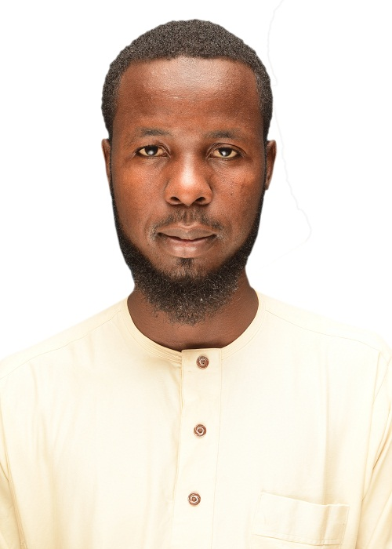

Computer and Communication Engineer with specialized experience in technical infrastructure maintenance and mission-critical system support
Jan 2024 - Present
Feb 2023 - Mar 2023
Dec 2021 - Dec 2022
Excel, Word, PowerPoint, Microsoft Windows, Google Workspace
Hardware troubleshooting, system configuration, basic networking
HTML, CSS, Javascript, Python